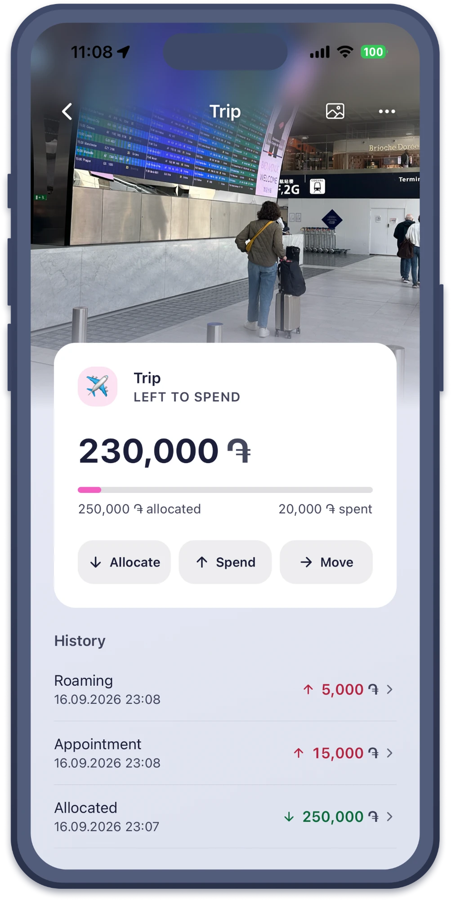

The idea
What Piggy does
- Make a bagFor what you spend on, and for what you put aside for.
- Group your bagsEssentials, everyday, saving for, owing.
- Log a spendEvery one, or rough amounts when you remember. Both work.
- Plan next monthDecide it before it starts, then fund it as income comes in.
- Check your moneyCount your cash and cards, and see if Piggy matches.
- Start a bag owingSay how much you owe, and watch it climb back to zero.
How it goes
A month with Piggy
Five steps, every month. They change a little each time, because what you want changes.

1Money comes in
Your salary, a side job, a gift. Piggy holds it until you say where it goes. Give each bag its share, and what is left to allocate counts down to zero.

2A want becomes a bag
A trip in June. A laptop. Money for the month everything goes wrong. Make a bag for it, give it what you can, and it starts filling up.

3You spend from a bag
Tap the button, pick the bag, type the amount. Each bag shows what is left while you choose, so you know before you spend and not after.

4You check the real money
Does Piggy match the money you really have? Count your cash and cards to find out. If the two do not agree, Piggy helps you fix the difference.

5You plan the next month
Most months look like the one before. Copy the last one or start from scratch, then change what needs changing. More here, less there, and it starts again.
Budget reviews, one to one
A video call with me, in Armenian or English, to start budgeting or to check how it is going.
Your data
It stays on your phone
- No bank login, no account. Your numbers are not on anyone's server, mine included.
- Face ID can lock it. Piggy opens for you and nobody else.
- Backups can be locked. Add a password before a backup leaves the app, and without it the file cannot be read.
- No ads, ever. Nothing here is paid for by watching what you buy.
Piggy does count anonymous events, such as "a bag was made", to see which parts of the app get used. No amounts, no bag names, no notes, nothing that says who you are. You can switch it off in Settings.
Support
Need a hand?
Write and you will get a real answer, from the person who made it.
- Stuck on something
- The support page
- Say hello
- beginyan.arthur@gmail.com
- What is new
- The Telegram channel. Help comes by email.
The beta
Ready when you are
Piggy is in a closed beta on iPhone, with a small group of testers. Everything is unlocked while it runs, Golden Piggy included. Follow the channel to hear the day it opens.